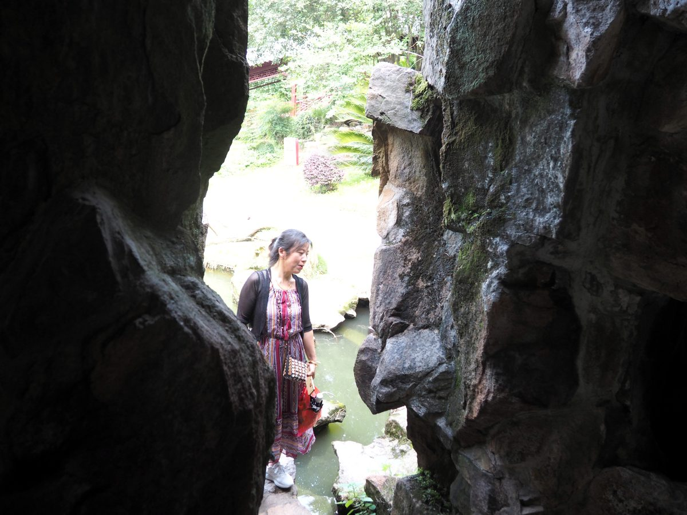

02 — 重点故事 / KEY STORY
庙会第三夜，风把两盏灯吹到了同一根枝上。
On the third night of the fair the wind moved two lanterns onto the same branch. The sun was already behind the roof, and everything that remained was borrowed light.
Five series · 2023—2026

我拍的不是地方，
是光落在地方上的方式。
I am not photographing places. I am photographing the way light lands on them — and how long it is willing to stay.
我通常比现场的人早到半小时。不是为了抢光，而是为了看清一个地方在没有人的时候是什么样子。
黑不是去掉颜色，是让形状自己说话。鸟、屋脊、闪电——这些题材一旦去色，轮廓会更狠。
每张照片统一做一次对比与饱和的校准，让不同时间、不同机器拍的东西看起来像同一次展览。
On the third night of the fair the wind moved two lanterns onto the same branch. The sun was already behind the roof, and everything that remained was borrowed light.
About the photographer

我的起点很具体：一个人在一条街的尽头站着，光从侧面来。于是我开始等光，而不是等地点。
拍照对我来说更像一种记录习惯——同一个地方我会反复回去，直到它开始认出我。